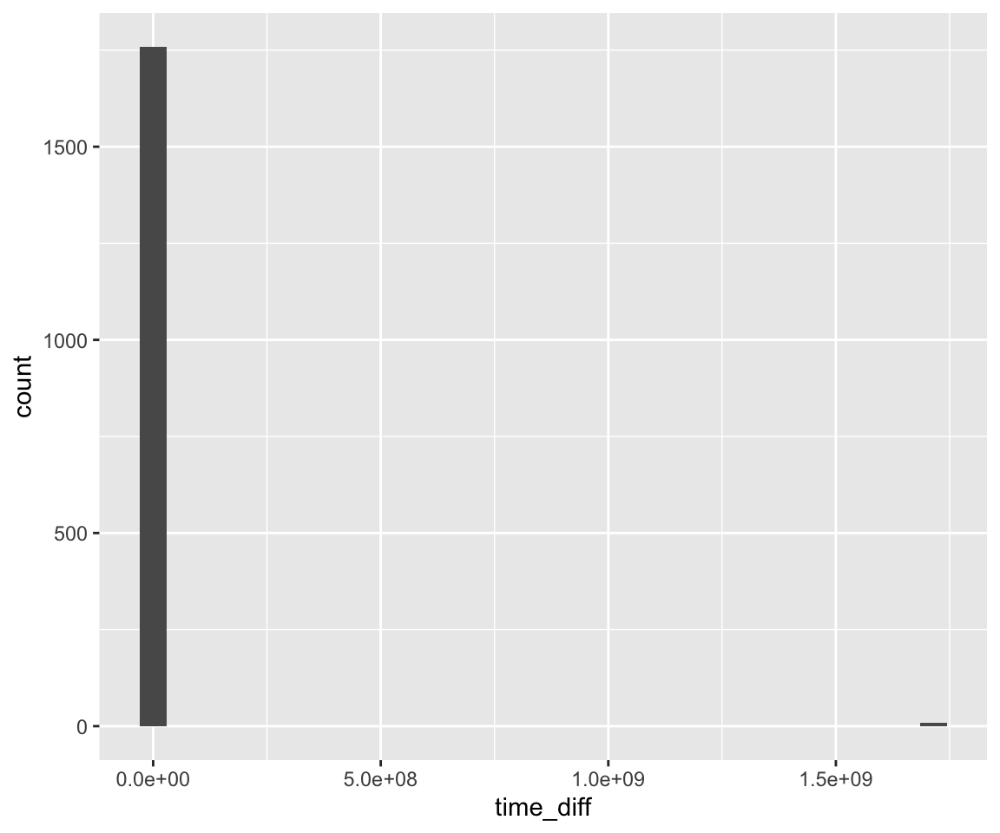
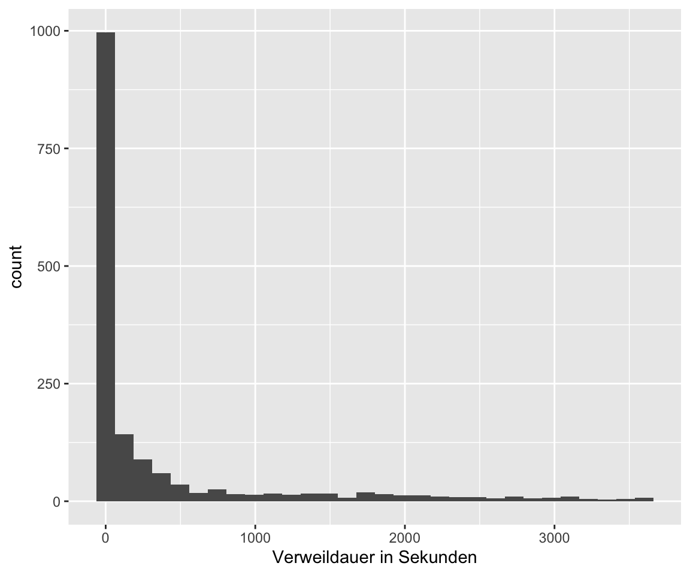
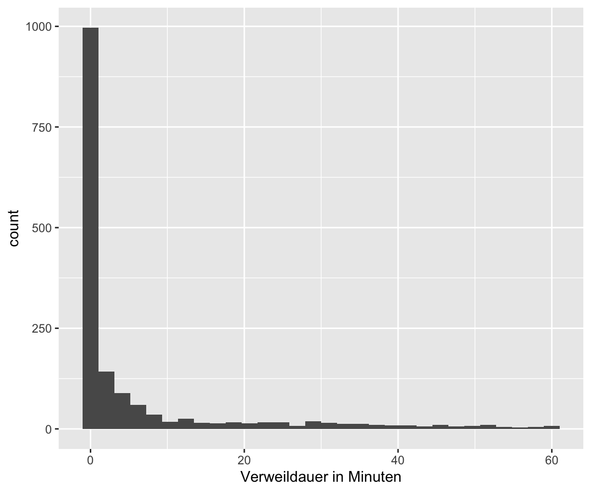
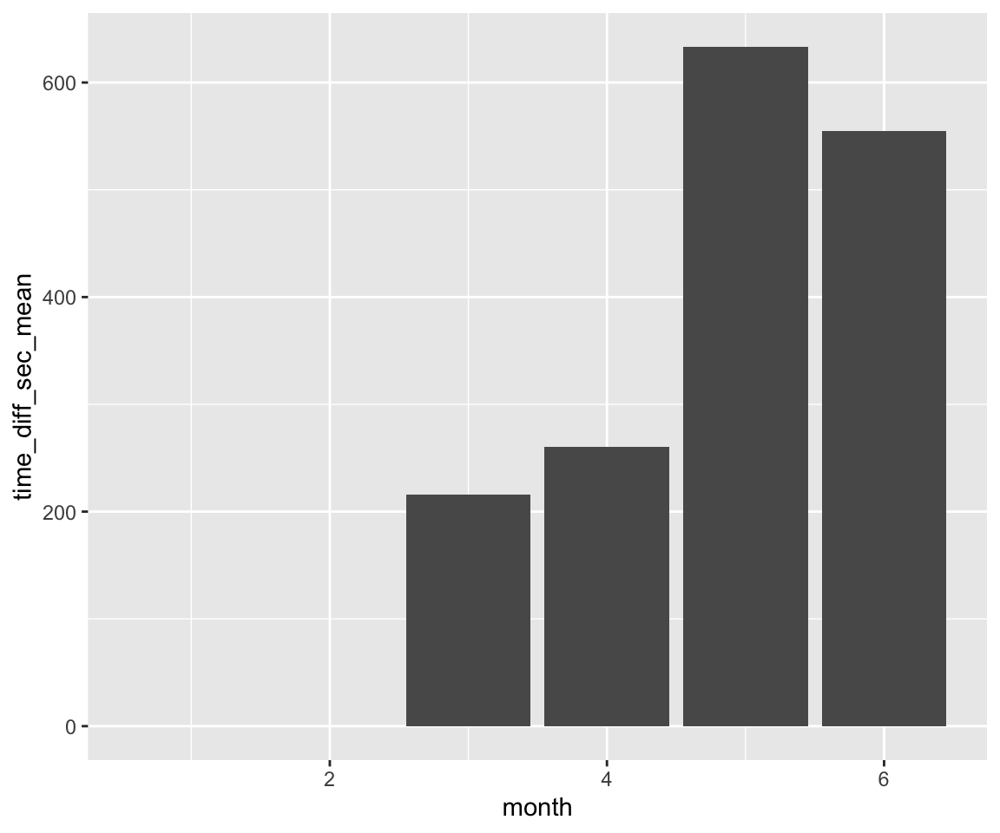
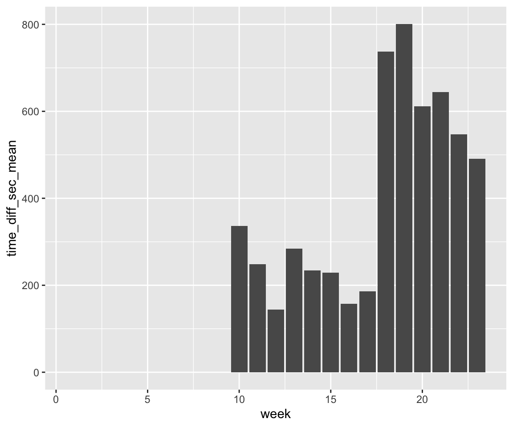
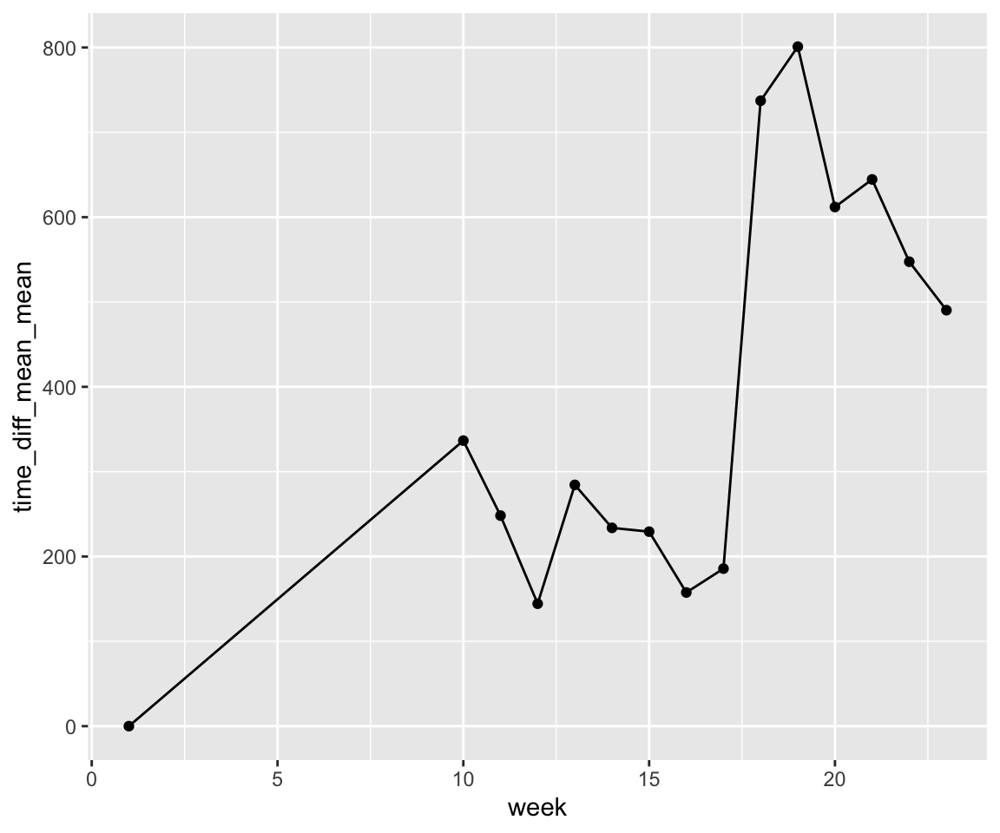
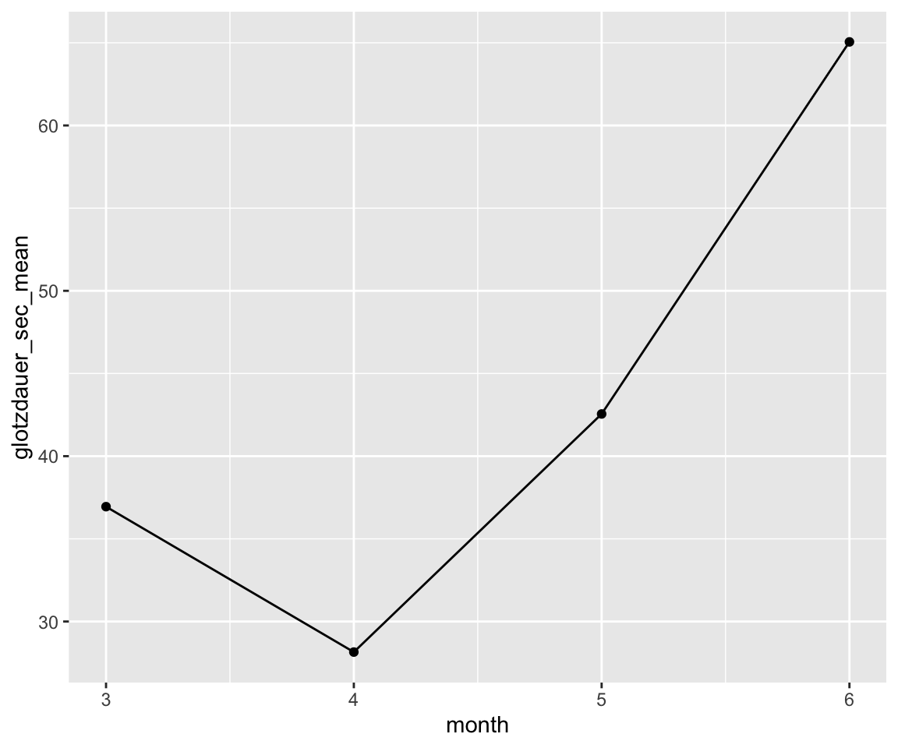
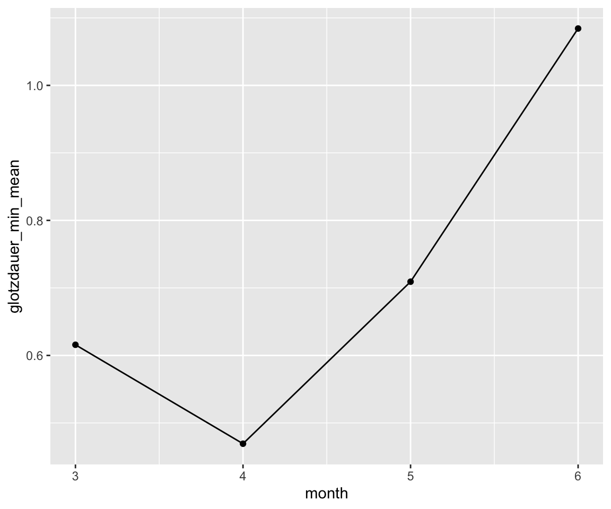
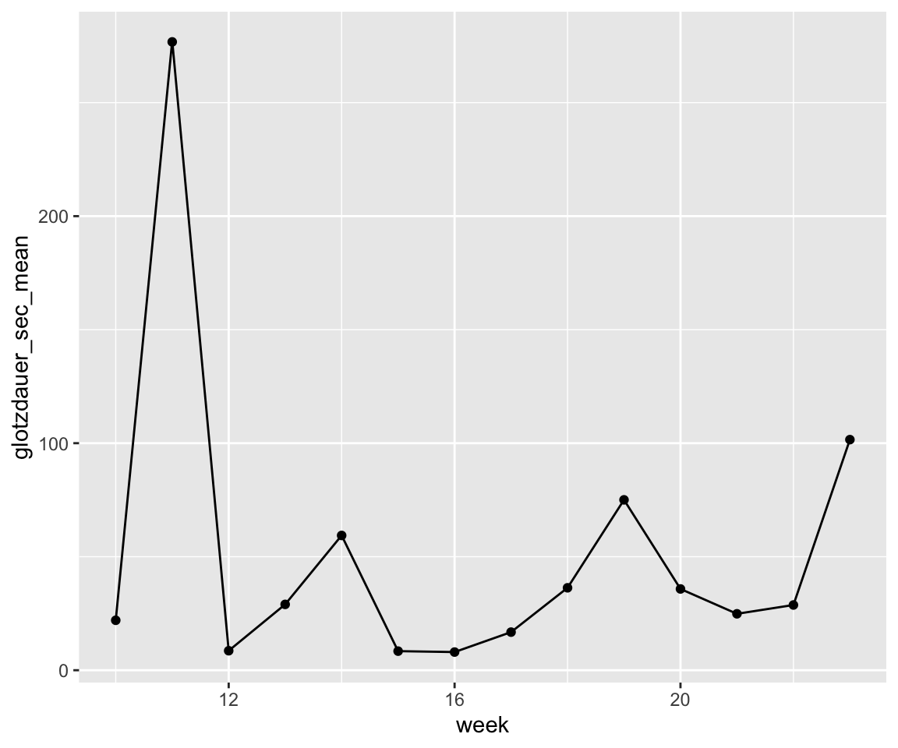
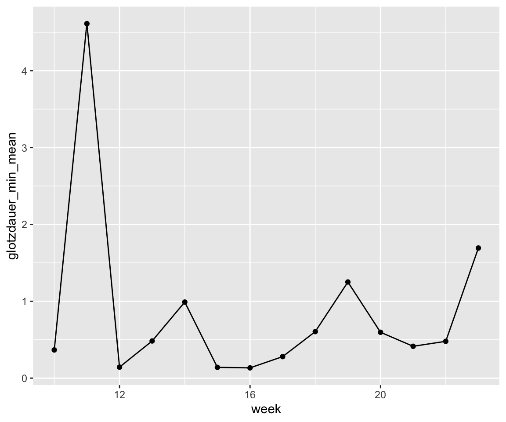

library(tidyverse)
library(targets)
library(gt)
library(easystats)1 Lösung 09
1.1 Aufgaben
Was machen die User?
- Stellen Sie die Namen der ersten 100 Spalten im Bericht dar.
- Werten Sie die Top-10-Tätigkeiten aus, die die Besucher auf der Website durchführen, z.B. Videos anschauen. Zählen Sie dafür, welche Werte wie oft bei
subtitlestehen. - Berechnen Sie die “Glotzdauer”, d.h. wie lange die Besucher sich Videos anschauen. Berichten Sie relevante Statistiken.
- Untersuchen und visualisieren Sie, ob sich die Anzahl der Nutzer oder die Verweildauer auf der Website verändert hat im Laufe der Zeit (Wochen und Monate).
- Untersuchen und visualisieren Sie, ob sich das Verhalten in Bezug auf die Videos verändert hat im Laufe der Zeit (Wochen und Monate), v.a. im Hinblick auf die Glotzdauer.
Ausgabeformat: Quarto (Bericht) und R-Syntax (Targets-Pipeline).
Bitte beachten Sie Hinweise zum Programmieren.
1.2 Setup
1.3 Lösungen
1.3.1 Lösungsdatei auf Github
Hier ist eine mögliche Lösung für die Pipeline.
1.3.2 R-Pakete
library(targets)
library(tidyverse)
library(ggokabeito) # Farben
library(easystats)1.3.3 Target-Objekte
tar_load(data_users_only, store = "mastersolution")
tar_load(action_types, store = "mastersolution")
tar_load(count_action_type, store = "mastersolution")
tar_load(glotzdauer, store = "mastersolution")
tar_load(time_spent, store = "mastersolution")1.3.4 Namen der ersten 100 Spalten
file, id_site, id_visit, visit_ip, visitor_id, fingerprint, action_details_0_type, action_details_0_url, action_details_0_page_id_action, action_details_0_idpageview, action_details_0_server_time_pretty, action_details_0_page_id, action_details_0_event_category, action_details_0_event_action, action_details_0_pageview_position, action_details_0_timestamp, action_details_0_icon, action_details_0_icon_svg, action_details_0_title, action_details_0_subtitle, action_details_1_type, action_details_1_url, action_details_1_page_title, action_details_1_page_id_action, action_details_1_idpageview, action_details_1_server_time_pretty, action_details_1_page_id, action_details_1_page_load_time, action_details_1_time_spent, action_details_1_time_spent_pretty, action_details_1_page_load_time_milliseconds, action_details_1_pageview_position, action_details_1_title, action_details_1_subtitle, action_details_1_icon, action_details_1_icon_svg, action_details_1_timestamp, action_details_2_type, action_details_2_url, action_details_2_page_id_action, action_details_2_idpageview, action_details_2_server_time_pretty, action_details_2_page_id, action_details_2_event_category, action_details_2_event_action, action_details_2_pageview_position, action_details_2_timestamp, action_details_2_icon, action_details_2_icon_svg, action_details_2_title, action_details_2_subtitle, action_details_3_type, action_details_3_url, action_details_3_page_title, action_details_3_page_id_action, action_details_3_idpageview, action_details_3_server_time_pretty, action_details_3_page_id, action_details_3_time_spent, action_details_3_time_spent_pretty, action_details_3_pageview_position, action_details_3_title, action_details_3_subtitle, action_details_3_icon, action_details_3_icon_svg, action_details_3_timestamp, action_details_4_type, action_details_4_url, action_details_4_page_id_action, action_details_4_idpageview, action_details_4_server_time_pretty, action_details_4_page_id, action_details_4_site_search_keyword, action_details_4_site_search_category, action_details_4_site_search_count, action_details_4_pageview_position, action_details_4_icon, action_details_4_icon_svg, action_details_4_title, action_details_4_subtitle, action_details_4_timestamp, action_details_5_type, action_details_5_url, action_details_5_page_id_action, action_details_5_idpageview, action_details_5_server_time_pretty, action_details_5_page_id, action_details_5_event_category, action_details_5_event_action, action_details_5_pageview_position, action_details_5_timestamp, action_details_5_icon, action_details_5_icon_svg, action_details_5_title, action_details_5_subtitle, action_details_6_type, action_details_6_url, action_details_6_page_title, action_details_6_page_id_action, action_details_6_idpageview
1.3.5 Top-10-Tätigkeiten
count_action_type |>
count(category, sort = TRUE) 1.3.6 Glotzdauer
Die Zeitintervalle sind in Sekunden dargestellt.
glotzdauer |>
summarise(glotzdauer_sec_mean = mean(time_interval, na.rm = TRUE),
glotzdauer_sec_sd = sd(time_interval, na.rm = TRUE),
glotzdauer_sec_max = max(time_interval, na.rm = TRUE),
glotzdauer_sec_median = median(time_interval, na.rm = TRUE),
glotzdauer_sec_iqr = IQR(time_interval, na.rm = TRUE)
)1.3.7 Veränderung der Anzahl der Nutzer und der Verweildauer im Laufe der Zeit
1.3.8 Insgesamt
time_spent_per_id_visit <-
time_spent |>
group_by(id_visit) |>
slice_head() |>
ungroup()time_spent_per_id_visit |>
glimpse()
## Rows: 1,770
## Columns: 6
## $ id_visit <chr> "10", "1028", "1029", "1030", "1031", "1032", "1033", "10…
## $ type <chr> "timestamp", "timestamp", "timestamp", "timestamp", "time…
## $ value <chr> "2024-03-04 15:24:44", "2024-04-16 03:14:07", "2024-04-16…
## $ action_count <int> 0, 0, 0, 0, 0, 0, 0, 0, 0, 0, 0, 0, 0, 0, 0, 0, 0, 0, 0, …
## $ time <dttm> 2024-03-04 15:24:44, 2024-04-16 03:14:07, 2024-04-16 07:…
## $ time_diff <drtn> 4900757 secs, 0 secs, 45 secs, 0 secs, 732 secs, 675 sec…Es gibt Extremwerte:
time_spent_per_id_visit |>
ggplot(aes(x = time_diff)) +
geom_histogram()
time_spent_per_id_visit |>
summarise(time_diff_sec_mean = mean(time_diff, na.rm = TRUE),
time_diff_sec_sd = sd(time_diff, na.rm = TRUE),
time_diff_sec_max = max(time_diff, na.rm = TRUE),
time_diff_sec_median = median(time_diff, na.rm = TRUE),
time_diff_sec_iqr = IQR(time_diff, na.rm = TRUE)
)Wir müssen die Extremwerte entfernen:
time_spent_per_id_visit_no_extreme <-
time_spent_per_id_visit |>
filter(time_diff < 3600)time_spent_per_id_visit_no_extreme |>
summarise(time_diff_sec_mean = mean(time_diff, na.rm = TRUE),
time_diff_sec_sd = sd(time_diff, na.rm = TRUE),
time_diff_sec_max = max(time_diff, na.rm = TRUE),
time_diff_sec_median = median(time_diff, na.rm = TRUE),
time_diff_sec_iqr = IQR(time_diff, na.rm = TRUE)
)Verweildauer in Sekunden
time_spent_per_id_visit_no_extreme |>
ggplot(aes(x = time_diff)) +
geom_histogram() +
labs(x = "Verweildauer in Sekunden")
Verweildauer in Minuten:
time_spent_per_id_visit_no_extreme |>
ggplot(aes(x = time_diff / 60)) +
geom_histogram() +
labs(x = "Verweildauer in Minuten")
Die Verteilung ist sehr rechtsschief. Wie ist das wohl zu interpretieren?
1.3.9 Im Zeitverlauf
Monate und Wochen hinzufügen:
time_spent_per_id_visit_no_extreme_weeks_months <-
time_spent_per_id_visit_no_extreme |>
mutate(month = month(time)) |>
mutate(week = week(time))1.3.9.1 Monate
time_spent_per_id_visit_no_extreme_weeks_months |>
group_by(month) |>
summarise(time_diff_sec_mean = mean(time_diff, na.rm = TRUE),
time_diff_min_mean = mean(time_diff / 60, na.rm = TRUE)
)time_spent_per_id_visit_no_extreme_weeks_months |>
group_by(month) |>
summarise(time_diff_sec_mean = mean(time_diff, na.rm = TRUE)) |>
ggplot(aes(x = month, y = time_diff_sec_mean)) +
geom_col()
1.3.9.2 Wochen
time_spent_per_id_visit_no_extreme_weeks_months |>
group_by(week) |>
summarise(time_diff_sec_mean = mean(time_diff, na.rm = TRUE)) |>
ggplot(aes(x = week, y = time_diff_sec_mean)) +
geom_col()
time_spent_per_id_visit_no_extreme_weeks_months |>
group_by(week) |>
summarise(time_diff_sec_mean = mean(time_diff, na.rm = TRUE),
time_diff_min_mean = mean(time_diff / 60, na.rm = TRUE))time_spent_per_id_visit_no_extreme_weeks_months |>
group_by(week) |>
summarise(time_diff_mean_mean = mean(time_diff, na.rm = TRUE)) |>
ggplot(aes(x = week, y = time_diff_mean_mean)) +
geom_point() +
geom_line()
1.3.10 Veränderung der Glotzdauer im Zeitverlauf
glotzdauer_month_week <-
glotzdauer |>
select(-group) |>
mutate(month = month(start_time),
week = week(start_time))glotzdauer_month_week |>
group_by(month) |>
summarise(glotzdauer_sec_mean = mean(time_interval, na.rm = TRUE),
glotzdauer_sec_sd = sd(time_interval, na.rm = TRUE),
glotzdauer_sec_max = max(time_interval, na.rm = TRUE),
glotzdauer_sec_median = median(time_interval, na.rm = TRUE),
glotzdauer_sec_iqr = IQR(time_interval, na.rm = TRUE)
)1.3.10.1 Monate
glotzdauer_month_week |>
drop_na() |>
group_by(month) |>
summarise(glotzdauer_sec_mean = mean(time_interval, na.rm = TRUE),
glotzdauer_sec_sd = sd(time_interval, na.rm = TRUE),
glotzdauer_sec_max = max(time_interval, na.rm = TRUE),
glotzdauer_sec_median = median(time_interval, na.rm = TRUE),
glotzdauer_sec_iqr = IQR(time_interval, na.rm = TRUE)
) |>
ggplot(aes(x = month, y = glotzdauer_sec_mean)) +
geom_point() +
geom_line()
glotzdauer_month_week |>
drop_na() |>
group_by(month) |>
summarise(glotzdauer_min_mean = mean(time_interval / 60, na.rm = TRUE)
) |>
ggplot(aes(x = month, y = glotzdauer_min_mean)) +
geom_point() +
geom_line()
1.3.10.2 Wochen
glotzdauer_month_week |>
drop_na() |>
group_by(week) |>
summarise(glotzdauer_sec_mean = mean(time_interval, na.rm = TRUE),
glotzdauer_sec_sd = sd(time_interval, na.rm = TRUE),
glotzdauer_sec_max = max(time_interval, na.rm = TRUE),
glotzdauer_sec_median = median(time_interval, na.rm = TRUE),
glotzdauer_sec_iqr = IQR(time_interval, na.rm = TRUE)
) |>
ggplot(aes(x = week, y = glotzdauer_sec_mean)) +
geom_point() +
geom_line()
glotzdauer_month_week |>
drop_na() |>
mutate(time_interval = time_interval / 60) |> # in Minuten!
group_by(week) |>
summarise(glotzdauer_min_mean = mean(time_interval, na.rm = TRUE),
glotzdauer_min_sd = sd(time_interval, na.rm = TRUE),
glotzdauer_min_max = max(time_interval, na.rm = TRUE),
glotzdauer_min_median = median(time_interval, na.rm = TRUE),
glotzdauer_min_iqr = IQR(time_interval, na.rm = TRUE)
) |>
ggplot(aes(x = week, y = glotzdauer_min_mean)) +
geom_point() +
geom_line()
Wiederverwendung
MIT
Zitat
Mit BibTeX zitieren:
@online{untitled,
author = {},
langid = {de-DE}
}
Bitte zitieren Sie diese Arbeit als:
n.d.